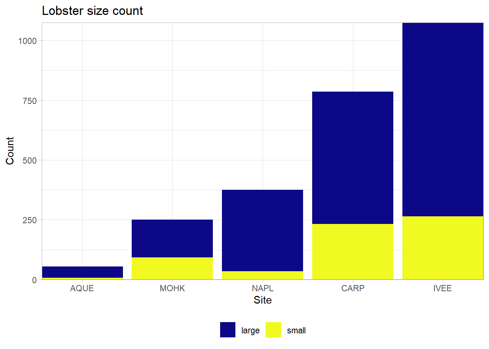
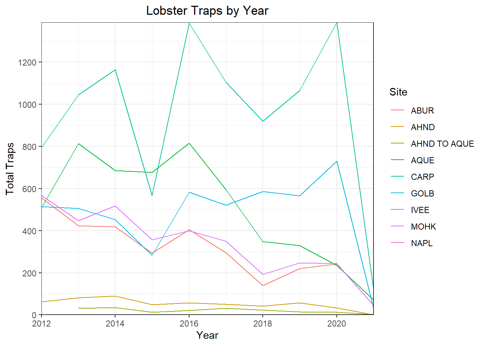
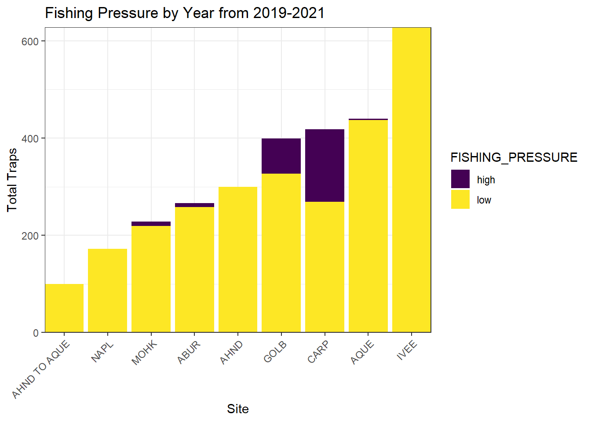

Rows: 7574 Columns: 10
── Column specification ────────────────────────────────────────────────────────
Delimiter: ","
chr (2): SITE, REPLICATE
dbl (7): YEAR, MONTH, TRANSECT, SIZE_MM, COUNT, NUM_AO, AREA
date (1): DATE
ℹ Use `spec()` to retrieve the full column specification for this data.
ℹ Specify the column types or set `show_col_types = FALSE` to quiet this message.
Rows: 11071 Columns: 10
── Column specification ────────────────────────────────────────────────────────
Delimiter: ","
chr (6): FISHING_SEASON, SITE, SEGMENT_START, SEGMENT_END, OBSERVER, NOTES
dbl (3): YEAR, MONTH, TRAPS
date (1): DATE
ℹ Use `spec()` to retrieve the full column specification for this data.
ℹ Specify the column types or set `show_col_types = FALSE` to quiet this message.
Summary of abstract:
This data shows the abundance, size and trap counts of the keystone species California spiny lobster (Panulirus interruptus) from Santa Barbara Channel. Two data collection sites are within Marine Protected Areas (MPAs), sites Naples and Isla Vista, while three are outside, being Arroyo Quemado, Mohawk, and Carpinteria, to assess the effect of fishing pressure on marine ecosystems.
Visualization
Abundance per site
ggplot(data = lobster_abundance, aes(x = SIZE_MM, fill = SITE)) +geom_histogram() +facet_wrap(~SITE) +ggtitle("Lobster size frequency in each site") +theme_light() +theme(legend.position ="bottom",legend.title =element_blank()) +scale_fill_viridis_d() +theme(plot.title =element_text(hjust =0.5)) # center the title name
`stat_bin()` using `bins = 30`. Pick better value with `binwidth`.
Warning: Removed 518 rows containing non-finite outside the scale range
(`stat_bin()`).
`summarise()` has grouped output by 'SITE'. You can override using the
`.groups` argument.
# line and point plotggplot(data = lobsters_summarize, aes(x = YEAR, y = COUNT)) +geom_point(aes(color = SITE)) +geom_line(aes(color = SITE)) +ggtitle("Lobster annual abundance in each site") +theme_light() +theme(legend.position ="bottom",legend.title =element_blank()) +scale_x_continuous(expand =c(0,0)) +scale_color_viridis_d() +theme(plot.title =element_text(hjust =0.5)) # center the title name
`summarise()` has grouped output by 'SITE'. You can override using the
`.groups` argument.
# bar plotggplot(data = lobster_size_lrg, aes(x =fct_reorder(SITE, COUNT) , y = COUNT , fill = SIZE_BIN )) +scale_fill_viridis_d(option ="plasma") +geom_col() +labs(x ="Site",y ="Count",title ="Lobster size count") +scale_x_discrete(expand =c(0,0)) +scale_y_continuous(expand =c(0,0)) +theme_light() +theme(legend.position ="bottom",legend.title =element_blank()) +theme(plot.title =element_text(hjust =0.5)) # center the title name

Total amount of traps set per year
# generating a line plot for commercial traps by year# wrangling data firstlobster_traps_summarize <- lobster_traps %>%mutate(SITE =toupper(SITE)) %>%#fix the to vs TO site issuegroup_by(SITE,YEAR) %>%# grouping just the site and year columnssummarise(TOTAL_TRAPS =sum(TRAPS, na.rm =TRUE)) # finding the total number of traps per year
`summarise()` has grouped output by 'SITE'. You can override using the
`.groups` argument.
# line plotggplot(data = lobster_traps_summarize, aes(x = YEAR, y = TOTAL_TRAPS)) +geom_line(aes(color = SITE)) +labs(x ="Year",y ="Total Traps",title ="Lobster Traps by Year",color ="Site") +scale_x_continuous(breaks =seq(2012,2020, 2), expand =c(0,0)) +scale_y_continuous(breaks =seq(0,1500,200), expand =c(0,0)) +# to set scale of axes and make sure y axis starts at 0theme_bw() +# using minimal theme for blank backgroundtheme(plot.title =element_text(hjust =0.5)) # center the title name

The fishing pressure of lobster from the years 2019-2021 by site
# creating a new data frame for data just from 2019-2021lobster_traps_fishing_pressure <- lobster_traps %>%filter(YEAR %in%c(2019, 2020, 2021)) %>%mutate(SITE =toupper(SITE)) %>%#fix the to vs TO site issuemutate(FISHING_PRESSURE =if_else(TRAPS >=8, true ="high", false ="low")) %>%group_by(SITE, FISHING_PRESSURE) %>%summarize(COUNT =n()) %>%drop_na()
`summarise()` has grouped output by 'SITE'. You can override using the
`.groups` argument.
# plotting the resultsggplot(data = lobster_traps_fishing_pressure, aes(x =fct_reorder(SITE, COUNT, .fun = sum), y = COUNT, fill = FISHING_PRESSURE)) +geom_col() +labs(x ="Site",y ="Instances of Fishing Pressure",title ="Fishing Pressure by Year from 2019-2021") +scale_fill_viridis_d() +scale_x_discrete(expand =c(0,0)) +scale_y_continuous(expand =c(0,0))+theme_bw() +theme(axis.text.x =element_text(angle =45, vjust =1, hjust =1)) +theme(plot.title =element_text(hjust =0.5)) # center the title name

Discussion
The size and abundance data shows some differences between sites within MPAs vs sites with fishing activities. From the sites within the MPAs, Isla Vista showed the highest overall abundance with mostly bigger lobsters. Naples, on the other hand, had the largest ratio of bigger versus smaller lobsters. Additionally, at both of these sites low fishing pressure exclusively was observed, perhaps indicating that due to the low fishing pressure, lobsters were able to live longer and therefore grow bigger. Together, these data show the effectiveness of MPAs.
The trap count data shows that through the years, there are fluctuations in the amount of lobster traps people set. In particular, it appears that years where there were many traps set are followed by years where fewer traps are set, perhaps due to lobster abundance. In 2015 and 2018 for example, fewer traps were set up, but in the years following, 2016 and 2018, there was a peak in the amount of traps set across most sites. Looking at the abundance data, it appears that there were fewer lobsters in 2016 and 2018, in line with there being more traps. Perhaps the lobsters were being caught before they could be counted. The fishing pressure data from 2019-2021 also correlates with the trap count, with the CARP location having a high degree of fishing pressure as well as having many traps set.